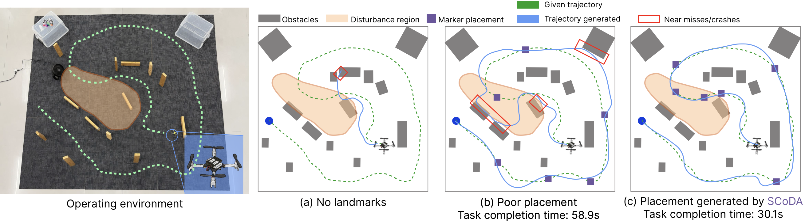
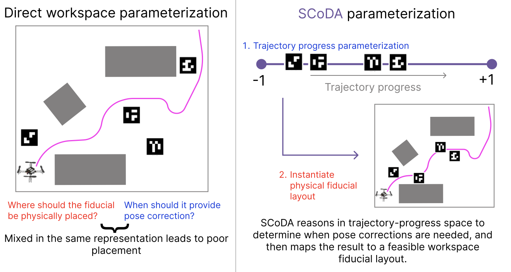
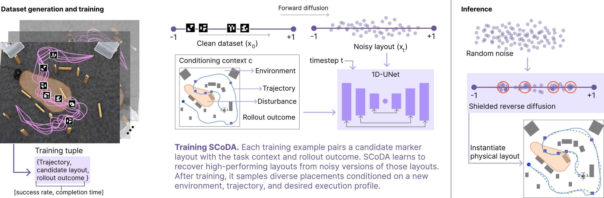
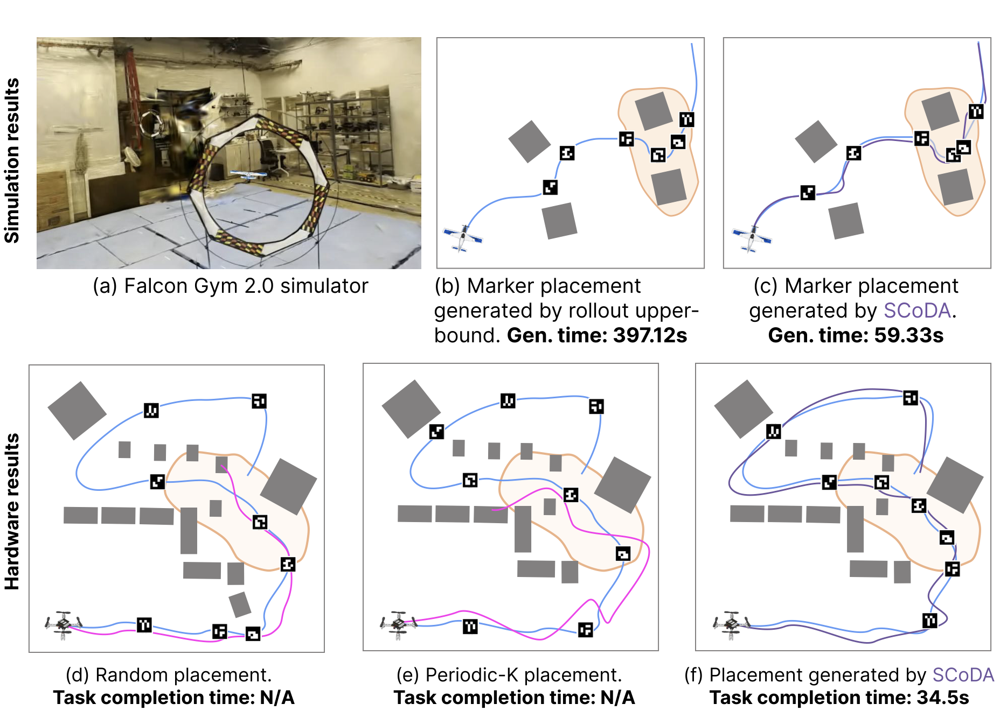

Shielded Conditional Diffusion for Environment Augmentation — generating sparse, task-aware fiducial layouts that keep a robot localized while following a planned trajectory.
Paper under double-blind review
CoRL 2026 · Submission
Reliable trajectory execution under partial observability depends not only on a feasible geometric path, but on whether the robot receives informative observations while executing it. Existing approaches keep the environment fixed and adapt the robot through belief-space planning, active localization, or extra sensing. We flip this perspective and address task-aware environment augmentation: given a mapped environment, a planned trajectory, and a small budget of visual fiducial markers, where should the environment be augmented so the trajectory executes reliably under uncertainty? We present SCoDA, which learns a conditional distribution over high-performing fiducial layouts from closed-loop rollout data, conditioned on the environment, trajectory, disturbance context, and desired execution profile. Its shielded sampler reasons about where along the trajectory pose corrections should occur and steers generation toward task-relevant, finite-budget layouts. Across simulated benchmarks and hardware deployments, SCoDA improves execution reliability and completion time over strong baselines.
Between observations, pose error grows under noise and disturbances. Poor or missing fiducial support lets that error compound into tracking failure, while a few well-timed observations are enough to keep the robot on the planned trajectory.

The key idea: instead of generating fiducial poses directly in the workspace, SCoDA generates where along the trajectory each pose correction is needed, then maps that back to a feasible physical layout. Task-critical regions become intervals; redundant markers become points that are too close together.


Under a fixed fiducial budget, SCoDA is the strongest placement method in both simulation and hardware — adding markers alone (random / periodic) is not enough; SCoDA learns which observations support closed-loop execution.
Generated fiducials concentrate near disturbance entry points, obstacle-dense segments, and parts of the path where tracking error would otherwise compound — not on already-easy stretches.
SCoDA approaches the expensive Rollout-Opt upper bound while reaching 90% success / 95% waypoint-following with the same minimal budget — using only a learned generator and shielded inference.
Layouts are produced in under a second with zero rollouts, versus hundreds of seconds of closed-loop search for Rollout-Opt.
| Method | Success rate (%) ▲ | Waypoint following (%) ▲ | Completion time (s) ▼ |
|---|---|---|---|
| No-Augmentation | 4.6 ±3.1 | 24.2 ±5.4 | 58.4 ±1.4 |
| Random | 13.7 ±5.1 | 36.9 ±6.2 | 55.6 ±2.3 |
| Periodic-K | 57.4 ±7.4 | 72.8 ±6.1 | 44.8 ±3.4 |
| Visibility-Greedy | 68.7 ±6.9 | 78.9 ±5.7 | 40.9 ±3.1 |
| SCoDA (ours) | 91.2 ±4.4 | 94.7 ±3.2 | 29.5 ±2.1 |
| Method | Success, nominal (%) ▲ | Success, disturbed (%) ▲ | Compl. time, disturbed (s) ▼ |
|---|---|---|---|
| No-Augmentation | 5.4 ±1.8 | 1.8 ±1.1 | 59.2 ±0.8 |
| Random | 9.6 ±2.4 | 5.9 ±1.9 | 56.8 ±1.2 |
| Periodic-K | 64.8 ±4.2 | 43.7 ±4.1 | 47.4 ±2.0 |
| Visibility-Greedy | 72.6 ±3.8 | 57.9 ±4.0 | 44.0 ±1.9 |
| Deviation-Greedy | 84.1 ±3.0 | 77.3 ±3.4 | 35.2 ±1.5 |
| Rollout-Opt (upper bound) | 98.7 ±0.9 | 97.8 ±1.1 | 27.9 ±0.8 |
| SCoDA (ours) | 96.9 ±1.3 | 94.7 ±1.7 | 29.2 ±1.1 |
SCoDA nearly matches Rollout-Opt while producing layouts in ~0.18 s with zero rollouts (vs. ~417 s and 4500 rollouts).

More SCoDA rollouts on additional environments
Each card shows the onboard flight (top) and the trajectory the robot actually followed under that fiducial placement (bottom). Baseline placements leave long observation gaps; SCoDA's layout keeps the robot tracking the planned path.
SCoDA shows that diffusion can act as a generative designer for just-enough environment augmentation: a trajectory-indexed representation, rollout-conditioned training, and a task-space shield together focus a finite marker budget on the corrective observations that matter most. Reliable execution under partial observability improves not by making the whole environment observable, but by placing limited observations where they change the outcome.
Limitations. SCoDA optimizes where to place a fixed number K of markers but does not choose K, assumes a reference trajectory and mapped environment, and relies on rollout supervision that must match the deployment setting. Extensions to multi-robot localization and full 3D visibility are promising future directions.
@inproceedings{scoda2026,
title = {Task-Aware Environment Augmentation for Reliable
Navigation via Shielded Conditional Diffusion},
author = {Anonymous Authors},
booktitle = {Conference on Robot Learning (CoRL)},
year = {2026},
url = {https://scoda-diffusion.github.io/}
}